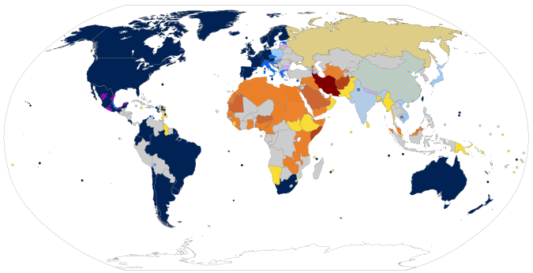
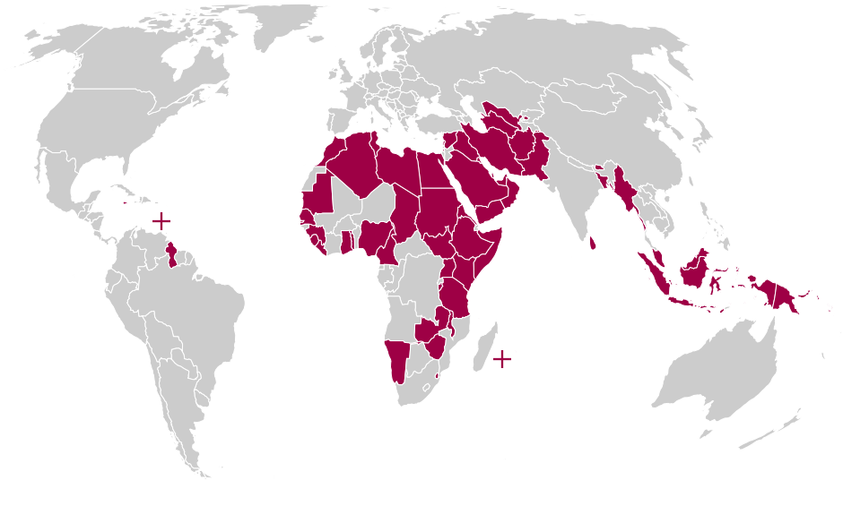

<!DOCTYPE html>
<html lang="en">
<head>
    <meta charset="UTF-8">
    <meta http-equiv="X-UA-Compatible" content="IE=edge">
    <meta name="viewport" content="width=device-width, initial-scale=1.0">
    <title>Discriminazione LGBT</title>
    <link href="https://fonts.googleapis.com/css2?family=Roboto+Serif:wght@100&display=swap" rel="stylesheet">
    <link href="https://fonts.googleapis.com/css2?family=Roboto+Serif:wght@600&display=swap" rel="stylesheet">
    <link rel="stylesheet" href="MainPage.css">

<div class="cont">

</head>
<body>
    
</body>
</html>


 <h1>Discriminazioni LGBT</h1>

 <h2>Cosa vuol dire LGBT?</h2>

 <p>
    La parola ”LGBT” è un acronimo, che sta per “Lesbian, Gay, Bisexual, Trans”. Queste parole rappresentano le sessualità alternative con cui un uomo, o una donna può identificarsi. <br>
    Nel mondo, il 97.4% di uomini si identificano come eterosessuali (Attratti al genere opposto), l’1.6% come Omosessuali (Attratti ad altri uomini) e lo 0.9% come bisessuali (Attratti a tutti e due i generi). <br>
    Invece per le donne, il 97.7% si identifica come eterosessuali, 0.8% come lesbiche (attratte allo stesso genere) e l’1.4% come bisessuali.<br>
    I membri di questa comunità vengono spesso discriminati. Vengono discriminati per molte differenti ragioni, una delle più diffuse è la religione. Molti paesi che si basano molto sulla religione negano alcuni diritti ai membri di questa comunità, come la libertà di parola. Alcuni paesi infliggono terribili pene sui membri, che variano dalla prigione alla morte. Questi paesi contrari sono specialmente diffusi in Asia e in Africa. <br>
 </p>

 <p>_____________________________________________________________________________________________________________________</p>

   <h2>Continenti</h2>

   <h3>America</h3>
   <p>Grande parte del territorio Americano permette il matrimonio. Alcuni paesi come le Barbados o la Dominica sono totalmente contrarie. Chi infrange queste leggi nei paesi contrari è punito con la prigione, la pena di morte non viene applicata.</p>
   <h3>Europa</h3>
   <p>Tutta l’unione Europea supporta la maggior parte dei diritti LGBT. 21 dei 27 stati consentono attività sessuali tra lo stesso sesso, 13 dei 27 stati consentono il matrimonio e 13 dei 27 stati consentono alle coppie di adottare un bambino. È legale in tutta Europa la partecipazione di membri LGBT nell’esercito. Non sono presenti stati che penalizzano i membri della comunità.</p>
   <h3>Asia</h3>
   <p>Grande parte dell’Asia è contro i diritti LGBT. Paesi come l’Afghanistan, l’Arabia Saudita e la Siria non riconoscono i diritti, e penalizzano con la prigione e la pena di morte. Altri paesi come il Turkmenistan o l’Uzbekistan consentono esclusivamente alle donne di essere coinvolte in attività sessuali con lo stesso sesso.</p>
   <h3>Africa</h3>
   <p>Molti paesi in Africa criminalizzano la comunità LGBT. Paesi come Algeria e Egitto infliggono pene terribili come prigionia per numerosi anni, tortura e esecuzioni. Per altri paesi, non sono state rilasciate informazioni su diritti ed eventuali pene. </p>
   <h3>Oceania</h3>
   <p>Grande parte dell’Oceania riconosce i diritti dell’LGBT. Paesi come la Nuova Zelanda e l’Australia supportano tutti i diritti, mentre altri paesi come le Isole Salomone e il Kiribati li considerano totalmente illegali. <br> </p>

   
   

   <p><br></p>
   <p>_____________________________________________________________________________________________________________________</p>
    <p><br><br></p>

   <h3>In quali continenti viene criminalizzata la comunità LGBT?</h3>

   

   <p>_____________________________________________________________________________________________________________________</p>

   <h3>Servizio</h3>
   <iframe width="560" height="315" class="lol" src="https://www.youtube.com/embed/R5pkaquV6do" title="YouTube video player" frameborder="0" allow="accelerometer; autoplay; clipboard-write; encrypted-media; gyroscope; picture-in-picture" allowfullscreen></iframe>
<h4>https://drive.google.com/file/d/1fjqwdz5jtzFULYCHufQzE8ZDu-Bb0LLr</h4>

   <p>_____________________________________________________________________________________________________________________</p>

   <h3>Intervista</h3>
   <iframe width="560" height="315" class="lol" src="https://www.youtube.com/embed/l6xuxXbkQww" title="YouTube video player" frameborder="0" allow="accelerometer; autoplay; clipboard-write; encrypted-media; gyroscope; picture-in-picture" allowfullscreen></iframe>
<h4>https://drive.google.com/file/d/1XAfKUNv5Nyah2UxkLw79V_uCypMNdjaD/view?usp=drivesdk</h4>

   <p>_____________________________________________________________________________________________________________________</p>

   <h3>Fonti</h3>

   <h4>
      https://www.imd.org/research-knowledge/articles/Thrive-as-an-LGBT-executive-or-ally/ <br>
      https://www.humandignitytrust.org/lgbt-the-law/map-of-criminalisation/ <br>
      https://gaycenter.org/about/lgbtq/ <br>
      https://en.wikipedia.org/wiki/LGBT_rights_by_country_or_territory <br>
      https://en.wikipedia.org/wiki/LGBT_rights_in_the_European_Union <br>
      https://en.wikipedia.org/wiki/LGBT_rights_in_the_Americas <br>
      https://en.wikipedia.org/wiki/LGBT_rights_in_Asia <br>
      https://en.wikipedia.org/wiki/LGBT_rights_in_Africa <br>
      https://en.wikipedia.org/wiki/LGBT_rights_in_Oceania <br>
      https://www.youtube.com/watch?v=zp8VMhgtz98 <br>
      https://www.youtube.com/watch?v=kyfY7IXakyo <br>
      https://www.youtube.com/watch?v=2R4tciDjCn0 <br>
      
   </h4>

   <p><br><br><br></p>

</div>

